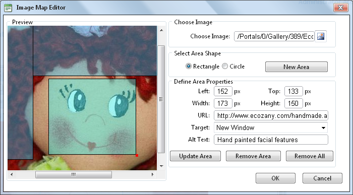

Creating an Image Map
How to create an image map using the TelerikEditorProvider for the RTE.
- Insert an image.
- Right click on the image and click the Image Map Editor button. This opens the Image Map Editor window.
- To create an area:
- At Select Area Shape, select either Rectangle or Circle.
- Click the New Area button. This displays a gray box defining the area.
- Move and resize the area as required. This updates the Define Area Properties fields for Left, Width, Top and Height.
- Optional. In the URL text box, enter the URL to open when a user clicks on this Area.
- At Target, select the target for the URL.
- Target: No target is set and the link will open in the same window.
- New Window: Will open a new window.
- Parent Window: If web page consists of frames, the link will open in the parent frame.
- Same Window: The link will open in the same window.
- Browser Window: The link will open in the same window.
- Search Pane:
- Media Pane:
- In the Alt Text text box, enter the text to be displayed for this area.
- Click the Update Area button.
- Repeat Step 3 to add additional areas.
- These additional editing options are available:
- To edit an existing area, click on it in the preview window, edit the properties as required and then click the Update Area button.
- To remove an area, click the Remove Area button.
- To remove all areas, click the Remove All button.
- Click OK to save.

Creating an Image Map